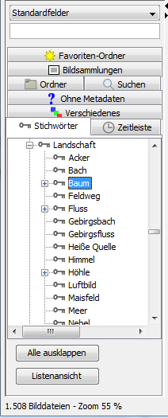

Wählen Sie im linken Stichwortbaum des Programmfensters ein Stichwort aus, werden Bilder angezeigt, die dieses Stichwort enthalten sowie alle Bilder, die eines der untergeordneten Stichwörter enthalten.
Hat das Stichwort Himmel die untergeordneten Stichwörter
Wolke und Sonne, werden Bilder angezeigt,
auf denen der Himmel oder die Sonne
oder eine Wolke zu sehen ist oder alles
zusammen.

Wählen Sie mehr als ein Stichwort aus, werden zusätzlich Bilder angezeigt, die die ausgewählten Stichwörter enthalten.